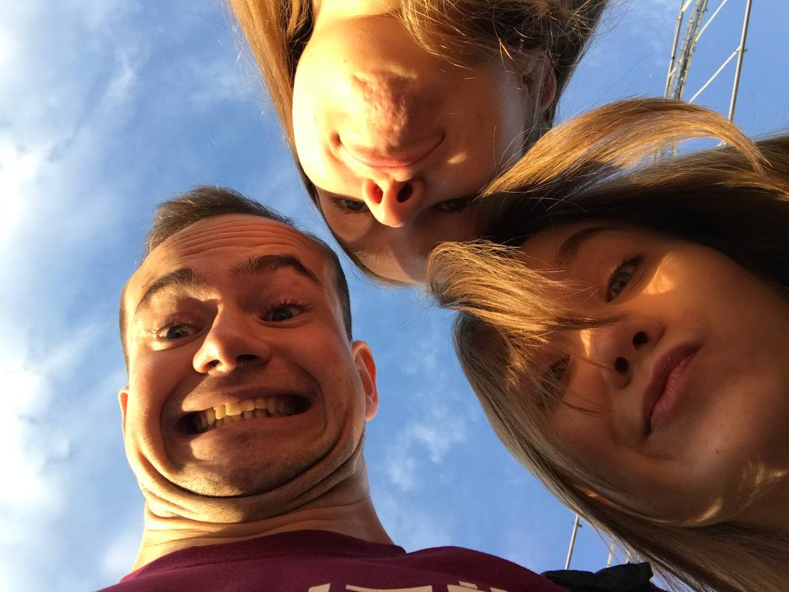
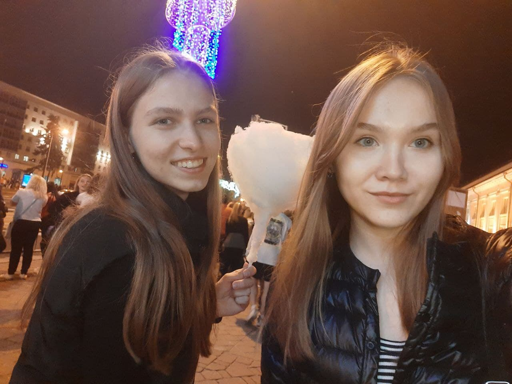
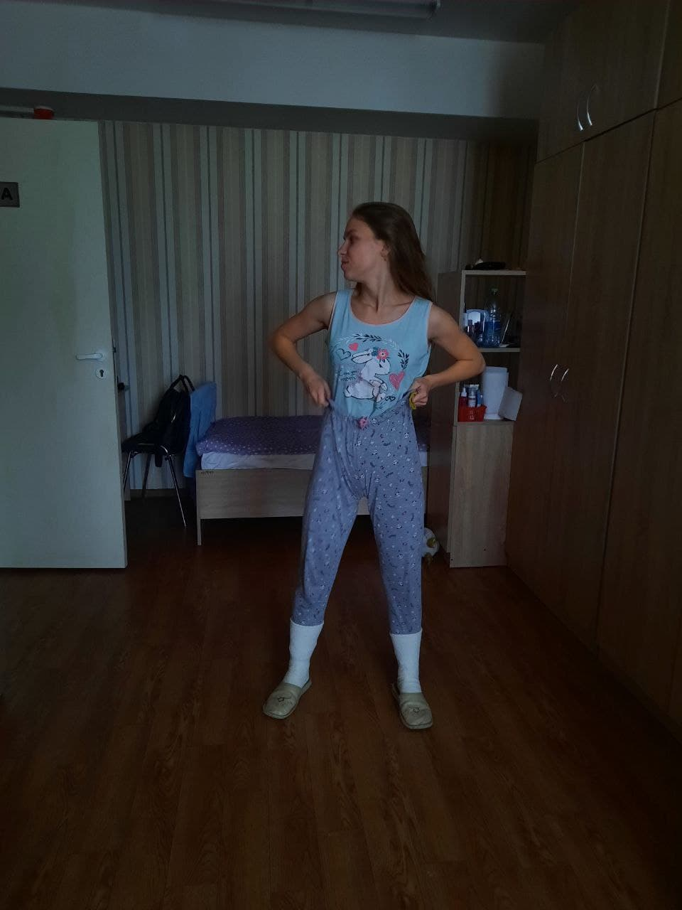
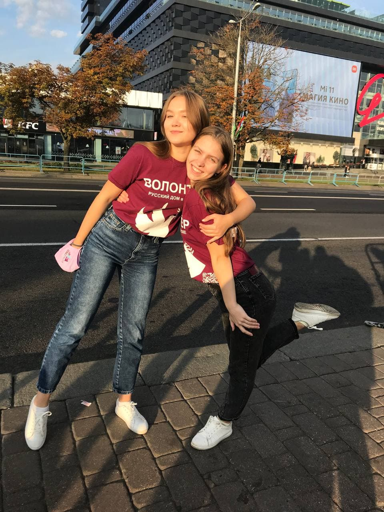
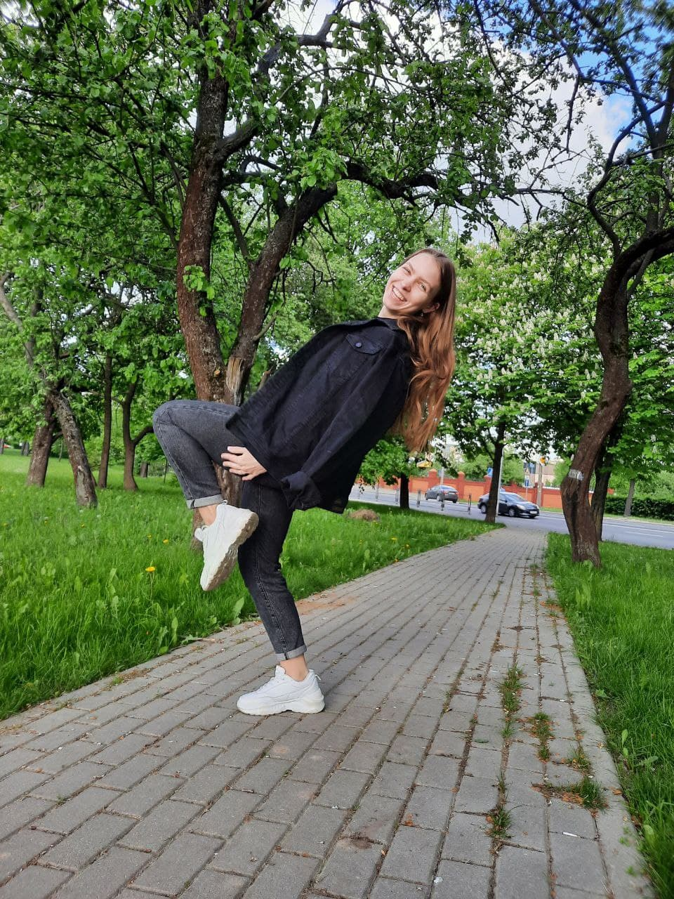

Сегодня мы рассмотри поведение и стиль жизни обычного (необычного) человека на примере Ольки Шидловской (Трофимовой).
БИОГРАФИЯ /
Место обитания: любое место, где можно танцевать
Возраст не больше 14
Профессия: танцорка от Бога
Увлечения: Т-танцы
В эфире рубрика "Рандомный факт об Ольке Шидловской"
Факт №1
Обожает готовить вксунейшую пасту со своей прекрасной соседкой (не будем показывать пальцем))))))
ТАЛАНТЫ /
Т-танцульки: Еще она любит (вернее, ей приходится) готовить и подрабатывает колуном для своих соседок!
В эфире рубрика "Рандомный факт об Ольке Шидловской"
Факт №2
Оля уже получила права и может прокатить вас всех на капоте, а если повезет - на пассажирском))
СТИЛЬ/
Немного о стиле Оли Шидловской. Вам вряд ли удастся найти более стильно человека, чем она. Оля пристально следит за модой и если в евроопте появятся в продаже новые носки, то она непременно их приобретет.
В эфире рубрика "Рандомный факт об Ольке Шидловской
Факт № the last one
23 часа 59 минут. примерно столько олька Шидловская проводит в тиктоке каждый день за просмотром видеороликов. поэтому она шарит не только в моде, но в трендах тт.
ФОТОГРАФИИ /
Как вы уже поняли, Олька Шидловская ничего такая девчонка. Боюсь, что мне не хватит и 154893327922 страниц, чтобы рассказать о ней. И, как говорит моя мама, проще 1 раз показать, чем рассказать. Поэтому показываю!
Оля осенняя

Оля смешная

Оля красивая

Оля купила новые носки

Оля и Саша спортсменки

Тут она просто красотка